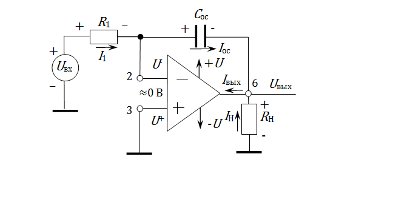
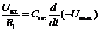
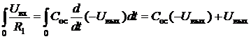
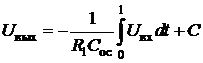

электронный ресурс по учебной дисциплине 1-58 01 01 - "Инженерно-психологическое обеспечение информационных технологий"
|
||
| Оглавление | Программа | Теория | Практика | Контроль знаний | Об авторах | ||
| Практика
ЛАБОРАТОРНАЯ РАБОТА № 7 Интегратор на операционном усилителе 1. Цель работы Изучить схемы построения интеграторов и дифференциаторов на операционных усилителях и их работу. 2. Теоретические сведения Электрическая схема, в которой форма выходного напряжения является интегралом от входной формы напряжения, называется интегратором или интегрирующим усилителем. Это схема получается в результате использования основных схем инвертирующих усилителей при замене резистора Rос конденсатором Cос, как показано на схеме (рис.1). 
Так как (1) и , (2) то отношение между током, протекающим через конденсатор, и напряжением на нем ; (3) поэтому для схемы (рис. 1): . (4) Выходное напряжение получим путем интегрирования обоих сторон уравнения (4).  t = 0 (5) Поэтому , (6)
где C — это постоянная интегрирования и она пропорциональна значению выходного напряжения в момент времени t = 0. Последнее уравнение показывает, что выходное напряжение прямо пропорционально отрицательному интегралу входного напряжения и обратно пропорционально R1Cос. Например, если на вход будет подан синусоидальный сигнал, то на выходе будет косинусоидальный сигнал; или если на вход будет подан прямоугольный сигнал, то на выходе будет треугольный сигнал. Когда , интегратор на рис. 1 работает как усилитель без обратной связи, так как конденсатор Сос представляет собой разрыв в схеме, с очень высоким коэффициентом усиления, в результате небольшое напряжение на входе приводит к смещению выходного напряжения в область положительного или отрицательного насыщения. Поэтому в практическом интеграторе, показанном на рис.2, для уменьшения уровня помех на выходе резистор Rос подсоединяют параллельно с конденсатором Cос. Таким образом, резистор Rос ограничивает усиление низких частот и, следовательно, уменьшает флюктуации выходного напряжения.
Рис. 2. Практический интегратор
3. Приборы и оборудование
Программа компьютерного моделирование электронных схем Multisim:
4. Порядок выполнения лабораторной работы
Напряжение питания операционных усилителей ±12 V.
4.1. Интегратор на операционном усилителе
1. Соберите интегратор, показанный на рис. 1. 2. Подайте на вход интегратора сигнал прямоугольной формы от генератора . Размах напряжения должен быть 2 В и частота 1kГц. 3. Изменяйте амплитуду входного сигнала от 1 до 6 В и наблюдайте форму выходного сигнала. 4. Объясните результаты.
4.2. Практический интегратор на операционном усилителе
1. Соберите интегратор, показанный на рис. 2. 2. Подайте на вход интегратора сигнал прямоугольной формы от генератора DLIN IDL 800. 3. Изменяйте амплитуду входного сигнала от 1 до 6 В и наблюдайте форму выходного сигнала. Нарисуйте временные диаграммы входного и выходного сигнала для Uвх = 1 В и для Uвх = 6 В. Объясните результаты. 4. Для Uвх = 3 В измените частоту входного сигнала с 1 до 0,5 кГц и пронаблюдайте изменения в форме выходного сигнала, регулируя амплитуду выходного сигнала. Нарисуйте временные диаграммы входного и выходного сигнала для f = 1 kГц и для f = 0.5 кГц. Объясните результаты. 5. Подайте на вход интегратора а) синусоидальный сигнал, б) сигнал треугольной формы и повторите п. 3 и 4.
5. Содержание отчёта
1. Цель эксперимента. 2. Схемы исследованных интеграторов и временные диаграммы. 3. Результаты исследований. 4. Выводы. 5. Ответы на контрольные вопросы.
6. Контрольные вопросы
1. Раскройте понятие «интегратор». Приведите уравнение, описывающее работу интегратора. 2. Разработайте схему практического интегратора для правильной обработки входных сигналов прямоугольной формы до 1 кГц. Амплитуда входного сигнала ‑ 100 мВ.
|
| (С) БГУИР |